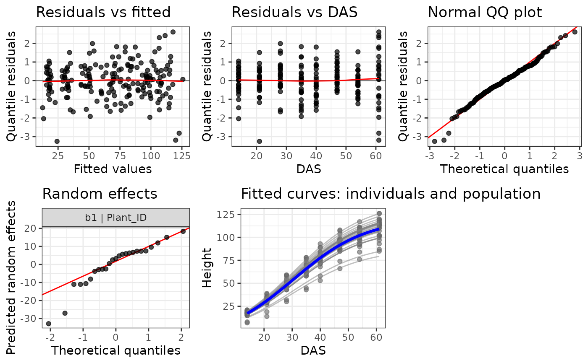
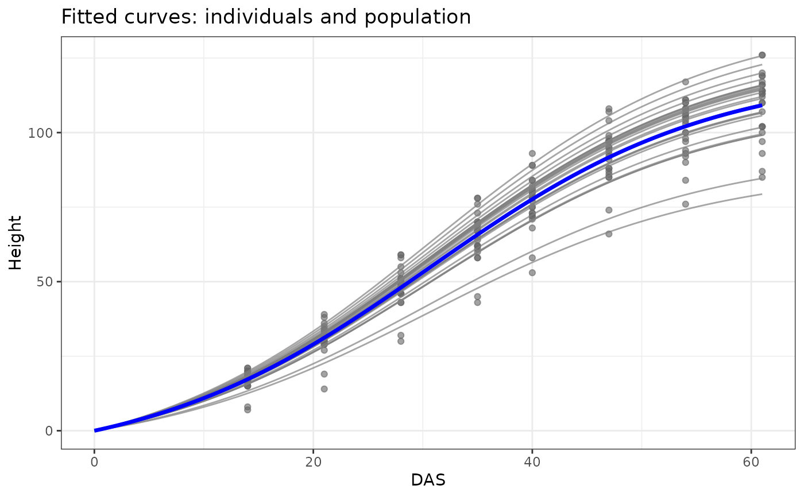
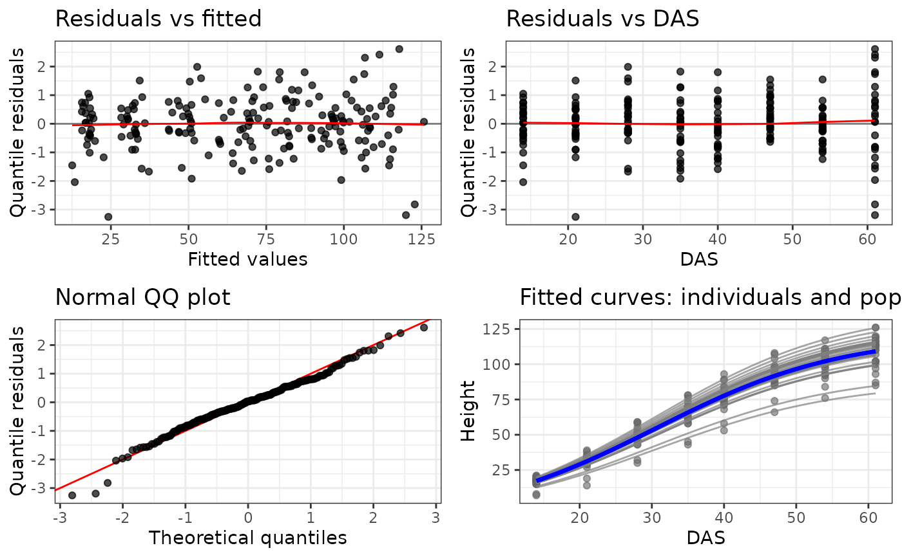
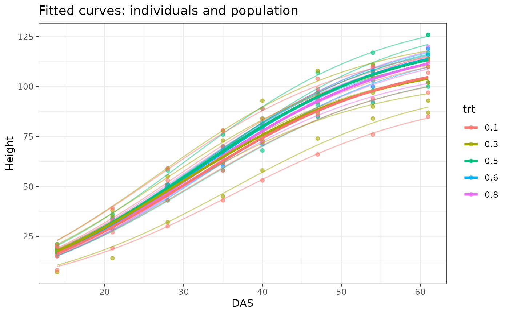
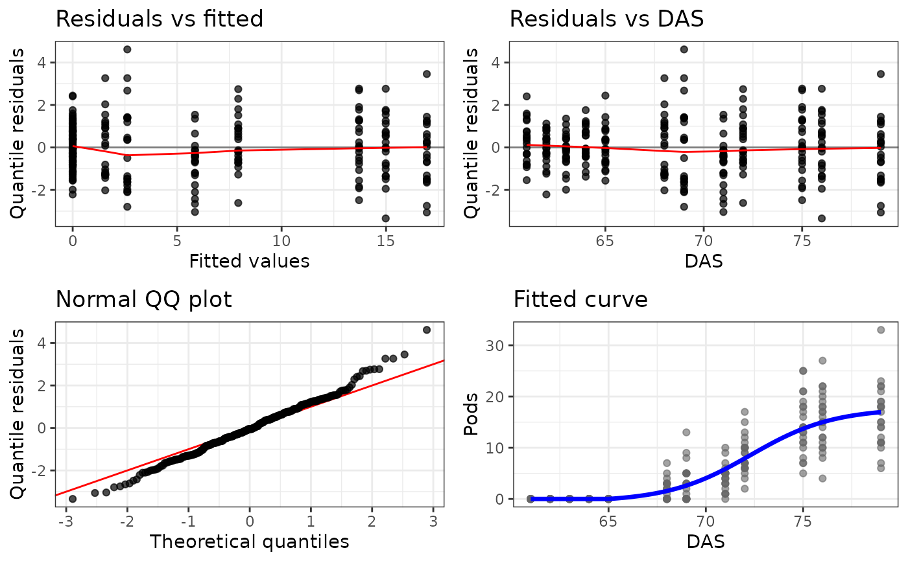

Validation plots (type="validation", the default): residuals against the fitted values,
residuals against x (e.g. time), a normal QQ plot of the residuals, and normal QQ plots of the predicted
random effects, with the data and the fitted curves drawn last on the same page, without a legend.
Fitted curves (type="curves"): for models with random effects, two panels with one legend,
the data with the curves of the individuals, and the population curves of the fixed effects alone;
for models without random effects, a single graph of the data with the fitted curves.
type=c("validation", "curves") is the same as type="validation". The graphs are
ggplot2 graphs.
Arguments
- x
A gcTMB object, the result of
gcTMB.- type
Character vector. "validation" (default) for the validation plots with the data and the fitted curves last, without a legend; "curves" for the data with the curves of the individuals and the population curves in two panels with one legend.
c("validation", "curves")is the same as "validation"- which
Integer vector, a subset of 1:4. The validation plots to draw: 1 residuals against fitted values, 2 residuals against x, 3 normal QQ plot of the residuals, 4 normal QQ plots of the predicted random effects (models with random effects only)
- residuals
Character string. Residual type of the validation plots, see
residuals.gcTMB: "quantile" (default), "pearson", "response" or "normalized" (decorrelated by the autocorrelation of the fit, seecorStruct)- random
Logical. If TRUE, residuals and fitted values of the validation plots include the predicted random effects
- times
Numeric vector or NULL. The times at which the curves are drawn, e.g.
seq(0, 61, by=0.1)to draw them from time 0; NULL (default) for 200 times over the range of the observed times- ncol
Integer or NULL. Number of columns of the page; NULL (default) for about as many columns as rows, the square root of the number of graphs rounded up
- seed
Integer or NULL. Seed for the randomised quantile residuals, which for the discrete families are random; it has no effect for the continuous families. NULL (default) sets no seed: the draws continue from the current state of the random number generator
- draw
Logical. If FALSE, the graphs are returned without drawing them
- ...
Not used.
Value
a list of ggplot objects, invisibly, for changing or drawing single graphs: fitted, time,
qq and ranef for the validation plots, and curves for the curves plot (with
type="curves" and random effects, one graph with the two panels as facets)
Details
The default randomised quantile residuals are standard normal under the model for all families,
so the QQ plot is compared with the identity line; for the discrete families they are drawn
uniformly within the jump of the distribution function at each observation, and seed
makes the plots reproducible. For residuals="response", the QQ plot line goes through the
quartiles. The Pearson and response residuals of the families other than gaussian and lognormal
are not normally distributed under the model, so their QQ plot is drawn with a warning. A lowess smoother (red) shows trends of the residuals against the fitted values and
time.
The simulations of simulate.gcTMB can also be used for simulation-based residuals,
e.g. with createDHARMa() of the package DHARMa; with random=FALSE, the simulations
are conditional on the predicted random effects, as the residuals of these plots.
The QQ plots of the random effects (which=4) show the predicted random effects of each
parameter and grouping factor. They are shrunk towards zero, so their spread is smaller than the
estimated standard deviation, and with few groups they say little about the normality of the
random effects.
The curves plot shows the data with the fitted curves at times, by default over the range
of the observed times: for models with random effects, the curve of each individual (each
combination of the grouping variables of the random effects) with its predicted random effects,
and the population curves, with the random effects at zero, as thick lines for each combination
of the covariates of the fixed effects (fform). With type="curves", the population
curves are in a panel of their own, next to the data and the curves of the individuals, and both
panels share the colours and the legend. Points and curves are coloured by these
covariates. A single numeric covariate is shown on a continuous colour scale, with the population
curves at its 10\
first observation.
Examples
fit <- gcTMB(Height ~ DAS, rform=b1 ~ 1 | Plant_ID, data=FabaHeights25)
# validation plots with the curves last
plot(fit, which=1:4)

# the data with the curves of the plants, and the population curve, from sowing
plot(fit, type="curves", times=seq(0, 61, by=0.1))

# by treatment
FabaHeights25$trt <- factor(FabaHeights25$Treatment)
fitt <- gcTMB(Height ~ DAS, fform=b1 + b2 ~ trt, rform=b1 + b2 ~ 1 | Plant_ID, data=FabaHeights25)
plot(fitt, type="curves")

# a single graph, changed
p <- plot(fit, which=2, draw=FALSE)
p$time + ggplot2::labs(x="Days after sowing")

# counts: the randomised quantile residuals are reproducible with a seed
fitp <- gcTMB(Pods ~ DAS, data=FabaCounts23, family="poisson", fix=c(b4=FALSE))
plot(fitp, seed=1)
